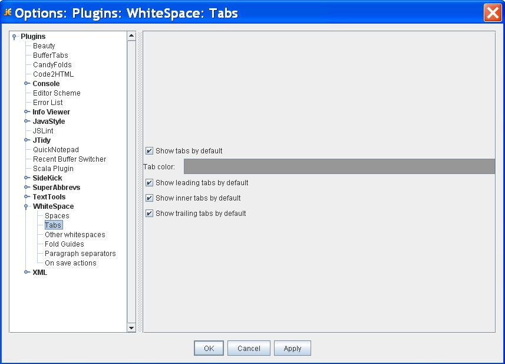

Learning Unit 1
Learning Unit 1Required jEdit Settings
File: /unit1/jeditSettings.html
Here are the jEdit settings that were in use for the course in a past semester. This is shown just to give you some sense of how changes to jEdit settings can be made.
Don't make changes to the jEdit settings unless directed to do so by your instructor. If you do see some settings about which you have personal preferences, check with your instructor first before making changes.
Editing Your Settings
- Select the menu item Utilities->Global Options
- In the dialog box that opens, click on the Editing option in the list on the left side.
- Here are the important settings on this panel
- Tab width: 4
- Indent width: 4
- Soft (Emulated with spaces) tabs: Should be checked
- Here are the important settings on this panel
- Click on the Text Area option.

- Make sure the check boxes match the screen shot.
- The most important setting is the Wrap Guide, it should be checked.
- Select the menu item Plugins->Plugin Options
- Open the settings for the WhiteSpace plugin by clicking in the icon on its left.
- Click on the Spaces section.
- Here are the important settings on this panel
- Show spaces by default should be checked
- Show trailing spaces by default should be checked
- Here are the important settings on this panel
- Click on the Tabs section.

- All checkboxes should be checked!